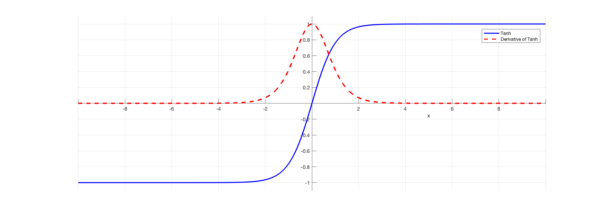
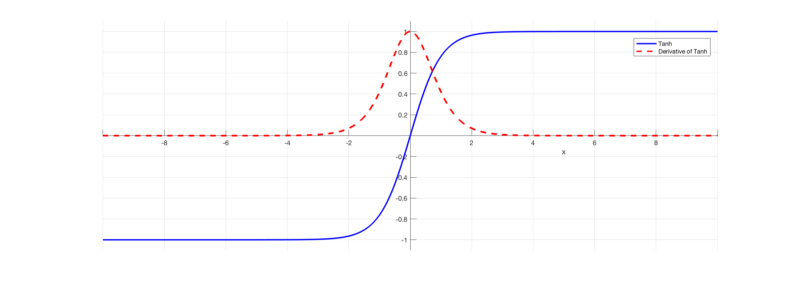
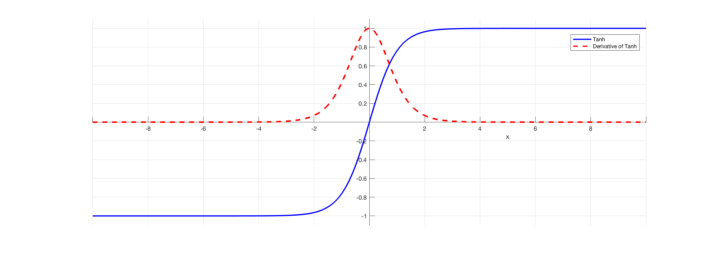

The architecture and behavior of a perceptron is very similar to biological neurons, and is often considered as the most basic form of neural network. Other kinds of neural networks were developed after the perceptron, and their diversity and applications continue to grow. It is easier to explain the constitutes of a neural network using the example of a single layer perceptron.

A single layer perceptron works as a linear binary classifier. Consider a feature vector [x1, x2, x3] that is used to predict the probability (p) of occurrence of a certain event.
Each input in the feature vector is assigned its own relative weight (w), which decides the impact that the particular input needs in the summation function. In relatively easier terms, some inputs are made more important than others by giving them more weight so that they have a greater effect in the summation function (y). A bias (wo) is also added to the summation.
Activation functions are really important for a Artificial Neural Network to learn and make sense of something really complicated and Non-linear complex functional mappings between the inputs and response variable.They introduce non-linear properties to our Network.Their main purpose is to convert a input signal of a node in a A-NN to an output signal. That output signal now is used as a input in the next layer in the stack. Specifically in A-NN we do the sum of products of inputs(X) and their corresponding Weights(W) and apply a Activation function f(x) to it to get the output of that layer and feed it as an input to the next layer.
- Sigmoid
- Tanh 
- Rectified Linear(ReLU)
- Softmax


Sigmoid function takes a real-valued number and “squashes” it into range between 0 and 1, i.e., σ(x)∈(0,1)In particular, large negative numbers become 0 and large positive numbers become 1. Moreover, the sigmoid function has a nice interpretation as the firing rate of a neuron: from not firing at all (0) to fully-saturated firing at an assumed maximum frequency
 

The hyperbolic tangent (tanh) function (used for hidden layer neuron output) is an alternative to Sigmoid function. It is defined by the formula


The ReLU function is more effectively than the widely used logistic sigmoid and its more practical counterpart, the hyperbolic tangent.

In probability theory, the output of the Softmax function can be used to represent a categorical distribution, that is, a probability distribution over K different possible outcomes. In fact, it is the gradient-log-normalizer of the categorical probability distribution. Here is an example of Softmax application
In most learning networks, error is calculated as the difference between the actual output and the predicted output.

The loss functions are helpful to train a neural network. Given an input and a target, they calculate the loss, i.e difference between output and target variable.
What are Optimization Algorithms ?
Optimization algorithms helps us to minimize (or maximize) an Objective function (another name for Error function) E(x) which is simply a mathematical function dependent on the Model’s internal learnable parameters which are used in computing the target values(Y) from the set of predictors(X) used in the model. For example — we call the Weights(W) and the Bias(b) values of the neural network as its internal learnable parameters which are used in computing the output values and are learned and updated in the direction of optimal solution i.e minimizing the Loss by the network’s training process and also play a major role in the training process of the Neural Network Model . The internal parameters of a Model play a very important role in efficiently and effectively training a Model and produce accurate results. This is why we use various Optimization strategies and algorithms to update and calculate appropriate and optimum values of such model’s parameters which influence our Model’s learning process and the output of a Model.
Gradient Descent is the most important technique and the foundation of how we train and optimize Intelligent Systems.
θ=θ−η⋅∇J(θ) — is the formula of the parameter updates, where ‘η’ is the learning rate ,’∇J(θ)’ is the Gradient of Loss function-J(θ) w.r.t parameters-‘θ’.
It is the most popular Optimization algorithms used in optimizing a Neural Network. Now gradient descent is majorly used to do Weights updates in a Neural Network Model , i.e update and tune the Model’s parameters in a direction so that we can minimize the Loss function. Now we all know a Neural Network trains via a famous technique called Backpropagation , in which we first propagate forward calculating the dot product of Inputs signals and their corresponding Weights and then apply a activation function to those sum of products, which transforms the input signal to an output signal and also is important to model complex Non-linear functions and introduces Non-linearities to the Model which enables the Model to learn almost any arbitrary functional mappings.
After this we propagate backwards in the Network carrying Error terms and updating Weights values using Gradient Descent, in which we calculate the gradient of Error(E) function with respect to the Weights (W) or the parameters , and update the parameters (here Weights) in the opposite direction of the Gradient of the Loss function w.r.t to the Model’s parameters.
The traditional Batch Gradient Descent will calculate the gradient of the whole Data set but will perform only one update , hence it can be very slow and hard to control for datasets which are very very large and don’t fit in the Memory. How big or small of an update to do is determined by the Learning Rate -η , and it is guaranteed to converge to the global minimum for convex error surfaces and to a local minimum for non-convex surfaces.Another thing while using Standard batch Gradient descent is that it computes redundant updates for large data sets.
- Stochastic gradient descent
- Mini Batch Gradient Descent
Stochastic Gradient Descent(SGD) on the other hand performs a parameter update for each training example .It is usually much faster technique.It performs one update at a time. θ=θ−η⋅∇J(θ;x(i);y(i)) , where {x(i) ,y(i)} are the training examples. But the problem with SGD is that due to the frequent updates and fluctuations it ultimately complicates the convergence to the exact minimum and will keep overshooting due to the frequent fluctuations .

we can split our training set into smaller sets and implement gradient descent on each batch one after the other. In this way, we can get an intuition of gradient descent before finishing entire training set. It makes the algorithm faster and more efficient. It is called mini batch gradient descent.
In contrast with batch gradient descent where cost function smoothly decays, mini-batch gradient has a little bit noisy cost function but still trend downwards. The reason for the noise is that there are some harder mini batches which cause oscillation to cost function. The most important thing is to select the size of each mini batch. If size is very large (say m) then it will again behave as batch gradient descent (very slow) and if it is very small (say 1) then each example will be a mini batch and it becomes stochastic gradient descent with very large noise. It won’t ever converge and it’ll always just kind of oscillate and wander around the region of the minimum.
- Model initialisation
- Forward propagate
- Loss function
- Differentiation
we have a loss of 0, since the neural network actual output will fit perfectly the training set.
we have a positive loss function, but the derivative is negative, meaning that an increase of weight will decrease the loss function.
the loss is 0 and the derivative is 0, we reached a perfect model, nothing is needed.
the loss becomes positive again, but the derivative is as well positive, meaning that any more increase in the weight, will increase the losses even more!!
The first step of the learning, is to start from somewhere: the initial hypothesis. Like in genetic algorithms and evolution theory, neural networks can start from anywhere. Thus a random initialisation of the model is a common practice. The rational behind is that from wherever we start, if we are perseverant enough and through an iterative learning process, we can reach the pseudo-ideal model.
The natural step to do after initialising the model at random, is to check its performance. We start from the input we have, we pass them through the network layer and calculate the actual output of the model streightforwardly. This step is called forward-propagation, because the calculation flow is going in the natural forward direction from the input -> through the neural network -> to the output.
At this stage, in one hand, we have the actual output of the randomly initialised neural network.
On the other hand, we have the desired output we would like the network to learn.
In order to be able to generalise to any problem, we define what we call: loss function. Basically it is a performance metric on how well the NN manages to reach its goal of generating outputs as close as possible to the desired values.
The most intuitive loss function is simply loss = (Desired output — actual output). However this loss function returns positive values when the network undershoot (prediction < desired output), and negative values when the network overshoot (prediction > desired output). If we want the loss function to reflect an absolute error on the performance regardless if it’s overshooting or undershooting we can define it as:
loss = Absolute value of (desired — actual ).Simply speaking, the machine learning goal becomes then to minimise the loss function (to reach as close as possible to 0).
We can just transform our machine learning problem now to an optimisation process that aims to minimise this loss function.